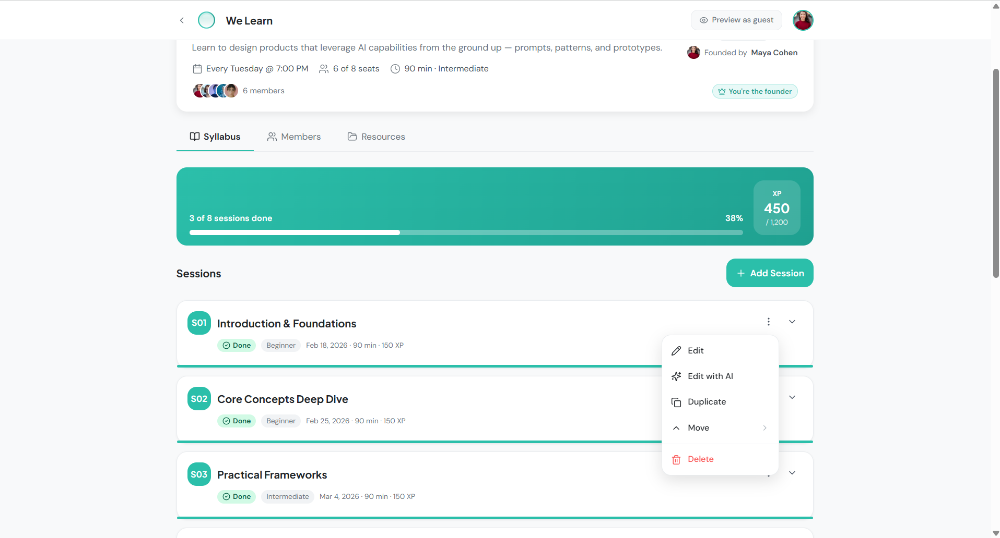
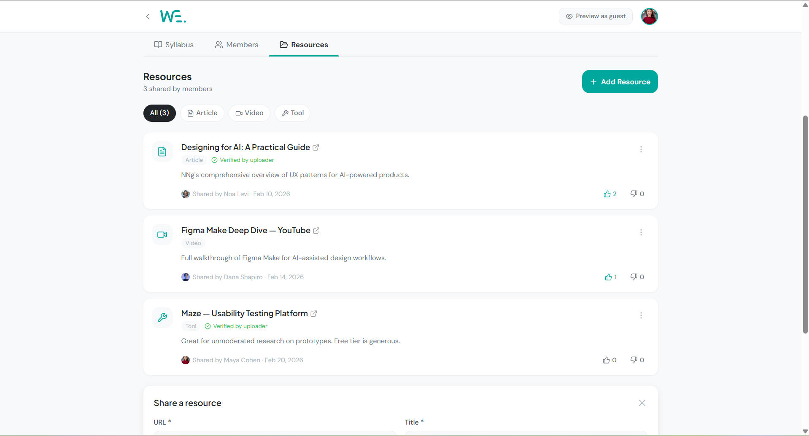

The entry point

"All her Bubbles, one screen. Not twelve WhatsApp threads."
A community of 8,000 women, looking for a place to actually learn together.
WhatsApp gave them a place to talk, not to learn. Content got lost. Groups multiplied with no center. Anyone could "join" with zero real commitment.

The Commitment Check asks how many hours a woman can really give, and pushes back if it's not enough. A Bubble only works if its members show up. So the filter had to sit before membership, not after it fails.

Structure didn't replace the community. It gave it room to grow.
Building inside the community you're designing for is a shortcut to the truth, and here, to the right kind of friction.